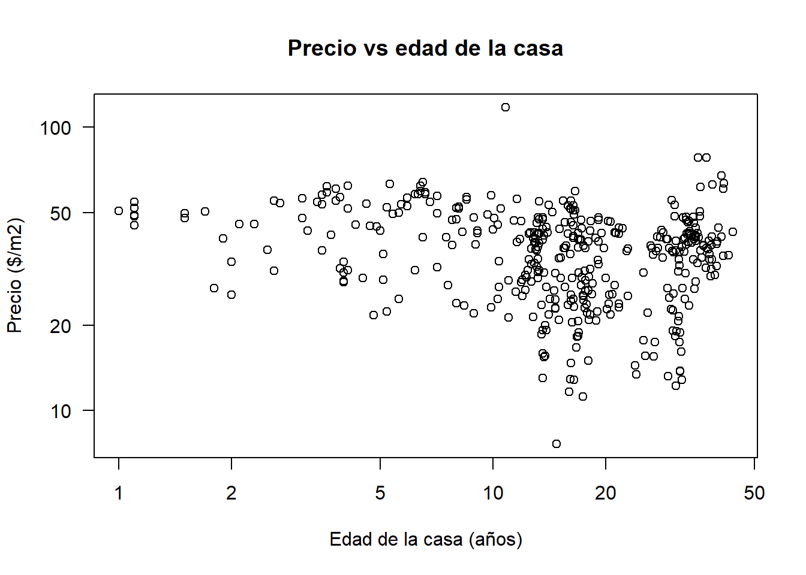
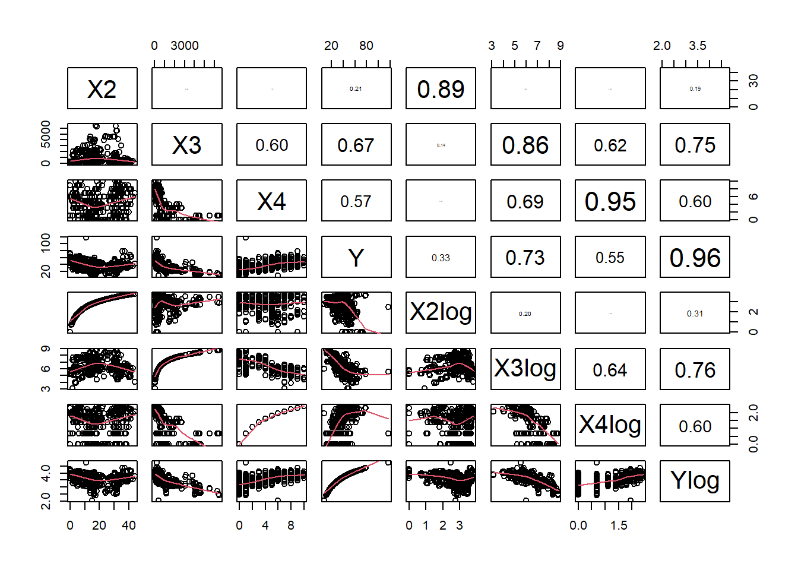
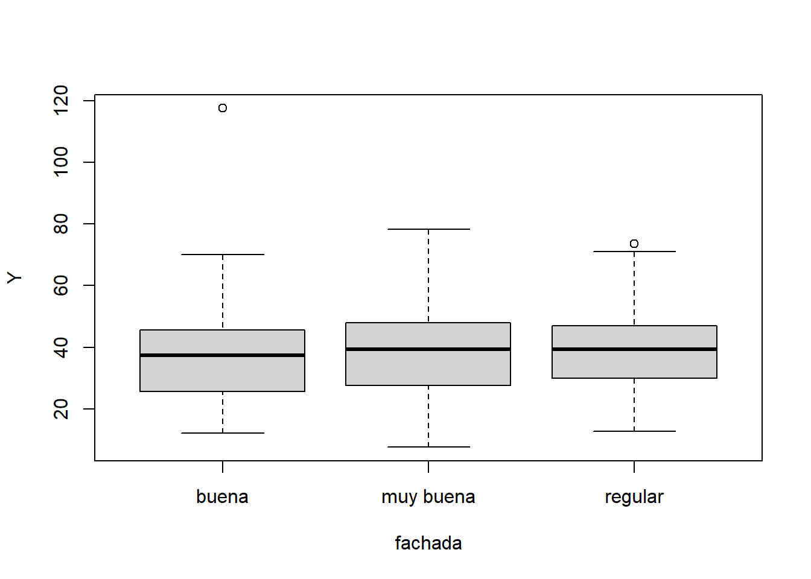
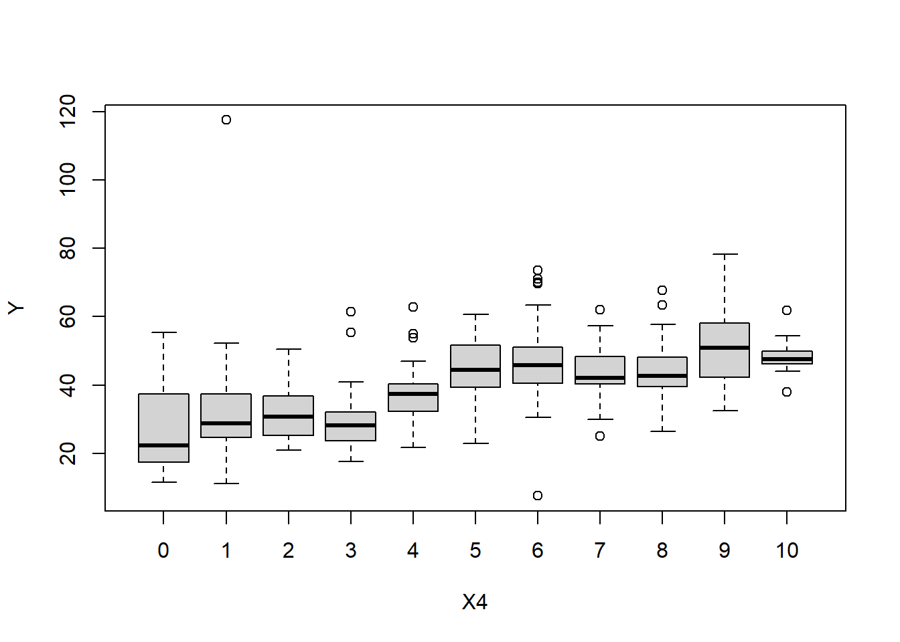
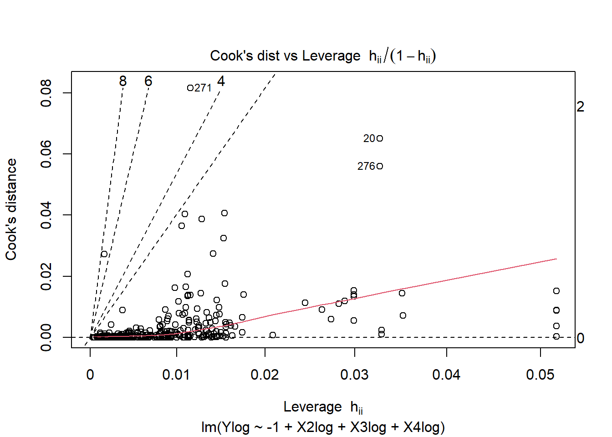

Sesión 04
Juan David Ospina Arango
6/4/2020
R Markdown
library(readr)
datos <- read_delim("real_estate_valuation_dataset.csv",
";", escape_double = FALSE, locale = locale(decimal_mark = ",",
grouping_mark = ""), trim_ws = TRUE)## Parsed with column specification:
## cols(
## No = col_double(),
## X1 = col_double(),
## X2 = col_double(),
## X3 = col_double(),
## X4 = col_double(),
## X5 = col_double(),
## X6 = col_double(),
## Y = col_double()
## )summary(datos)## No X1 X2 X3 X4
## Min. : 1.0 Min. :2013 Min. : 0.000 Min. : 23.38 Min. : 0.000
## 1st Qu.:104.2 1st Qu.:2013 1st Qu.: 9.025 1st Qu.: 289.32 1st Qu.: 1.000
## Median :207.5 Median :2013 Median :16.100 Median : 492.23 Median : 4.000
## Mean :207.5 Mean :2013 Mean :17.713 Mean :1083.89 Mean : 4.094
## 3rd Qu.:310.8 3rd Qu.:2013 3rd Qu.:28.150 3rd Qu.:1454.28 3rd Qu.: 6.000
## Max. :414.0 Max. :2014 Max. :43.800 Max. :6488.02 Max. :10.000
## X5 X6 Y
## Min. :24.93 Min. :121.5 Min. : 7.60
## 1st Qu.:24.96 1st Qu.:121.5 1st Qu.: 27.70
## Median :24.97 Median :121.5 Median : 38.45
## Mean :24.97 Mean :121.5 Mean : 37.98
## 3rd Qu.:24.98 3rd Qu.:121.5 3rd Qu.: 46.60
## Max. :25.01 Max. :121.6 Max. :117.50No: número del registro X1: Año del negocio X2: edad de la casa (años) X3: distancia al transporte masivo (m) X4: número de tiendas de conveniencia alrededor X5: latitud X6: longitud Y: variable respuesta, precio ($/m2)
datos_an<-subset(datos,select=c("X2","X3","X4","Y"))
# datos_an<-datos[,c(2:5,8)]
# datos_an<-datos[,c("X2","X3","X4","Y")]
head(datos_an)## # A tibble: 6 x 4
## X2 X3 X4 Y
## <dbl> <dbl> <dbl> <dbl>
## 1 32 84.9 10 37.9
## 2 19.5 307. 9 42.2
## 3 13.3 562. 5 47.3
## 4 13.3 562. 5 54.8
## 5 5 391. 5 43.1
## 6 7.1 2175. 3 32.1Objetivos: 1. Predecir el precio por metro cuadrado de una vivienda en función de ciertas características (edad de la propiedad, la distancia al transporte y el número de comercios alrededor)
Preguntas: ¿Afecta la edad de la casa su valor? ¿Dónde se sitúan las casas con mejores características? ¿Se están pagando impuestos correctamente?
¿Tengo toda la información necesaria para resolver mi problema de predicción? No. Probablemente no tenemos toda la información para hacer el mejor modelo. Información como el número de baños y otras comodidades serían complementarias para hacer un buen modelo.
panel.hist <- function(x, ...)
{
usr <- par("usr"); on.exit(par(usr))
par(usr = c(usr[1:2], 0, 1.5) )
h <- hist(x, plot = FALSE)
breaks <- h$breaks; nB <- length(breaks)
y <- h$counts; y <- y/max(y)
rect(breaks[-nB], 0, breaks[-1], y, col = "cyan", ...)
}
panel.cor <- function(x, y, digits = 2, prefix = "", cex.cor, ...)
{
usr <- par("usr"); on.exit(par(usr))
par(usr = c(0, 1, 0, 1))
r <- abs(cor(x, y))
txt <- format(c(r, 0.123456789), digits = digits)[1]
txt <- paste0(prefix, txt)
if(missing(cex.cor)) cex.cor <- 0.8/strwidth(txt)
text(0.5, 0.5, txt, cex = cex.cor * r)
}
pairs(datos_an,lower.panel = panel.smooth,upper.panel = panel.cor)
plot(datos_an$X2,datos_an$Y,las=1,xlab="Edad de la casa (años)",
ylab="Precio ($/m2)",
main="Precio vs edad de la casa",log="xy")## Warning in xy.coords(x, y, xlabel, ylabel, log): 17 x values <= 0 omitted from
## logarithmic plot
plot(datos_an$X3,datos_an$Y,las=1,xlab="Distancia al transporte (ln m)",
ylab="Precio ($/m2)",
main="Precio vs distancia al transporte",log="xy")
La gráfica en escala logarítmica (para x) parece mostrar que la variabilidad en los precios disminuye a medida que las casas se sitúan lejos del transporte. Así mismo, pareciera que el precio disminuye con la distancia al transporte. Es decir, mientras más lejos del transporte menos valor tienen las casas y menos se diferencian probablemente por sus características.
plot(datos_an$X4,datos_an$Y,las=1,xlab="Número de comercios",
ylab="Precio ($/m2)",
main="Precio vs número de comercios",log="xy")## Warning in xy.coords(x, y, xlabel, ylabel, log): 67 x values <= 0 omitted from
## logarithmic plot
Transformación logarítmica:
datos_an$X2log<-log(datos_an$X2+1)
datos_an$X3log<-log(datos_an$X3)
datos_an$X4log<-log(datos_an$X4+1)
datos_an$Ylog<-log(datos_an$Y)Diagrama de dispersión por pares:
pairs(datos_an,lower.panel = panel.smooth,upper.panel = panel.cor)
set.seed(20200604)
fachada<-sample(c("muy buena","buena","regular"),414,replace=TRUE)datos$fachada<-fachadaboxplot(Y~fachada,data=datos)
boxplot(Y~X4,data=datos_an)
Escalamiento de las variables:
datos_an_scale<-scale(datos_an,center=TRUE,scale=TRUE)
medias<-attr(datos_an_scale,"scaled:center")
desv_Est<-attr(datos_an_scale,"scaled:scale")
datos_an_scale<-as.data.frame(datos_an_scale)Gráfico de dispersión por pares con las variables escaladas:
pairs(datos_an_scale,lower.panel = panel.smooth,upper.panel = panel.cor)Calibración de un modelo lineal
Separación del conjunto de datos en entrenamiento y validación
set.seed(20200604)
p_vl<-0.2 # fracción de los datos usados para la validación
N<-dim(datos_an_scale)[1] # cantidad de registros
ix_vl<-sample(N,ceiling(p_vl*N),replace = FALSE)
datos_tr<-datos_an_scale[-ix_vl,]
datos_vl<-datos_an_scale[ix_vl,]Ajuste de un modelo lineal
modelo_lm<-lm(Ylog~-1+X2log+X3log+X4log,data=datos_tr) # Ylog está centrada
summary(modelo_lm)##
## Call:
## lm(formula = Ylog ~ -1 + X2log + X3log + X4log, data = datos_tr)
##
## Residuals:
## Min 1Q Median 3Q Max
## -4.2731 -0.3120 0.0117 0.3241 2.7778
##
## Coefficients:
## Estimate Std. Error t value Pr(>|t|)
## X2log -0.17068 0.03506 -4.868 1.75e-06 ***
## X3log -0.57744 0.04402 -13.118 < 2e-16 ***
## X4log 0.21951 0.04381 5.010 8.91e-07 ***
## ---
## Signif. codes: 0 '***' 0.001 '**' 0.01 '*' 0.05 '.' 0.1 ' ' 1
##
## Residual standard error: 0.6107 on 328 degrees of freedom
## Multiple R-squared: 0.6342, Adjusted R-squared: 0.6308
## F-statistic: 189.5 on 3 and 328 DF, p-value: < 2.2e-16plot(modelo_lm,which = 6)
modelo_lm_int<-lm(Ylog~-1+X2log+X3log+X4log+X3log:X4log,data=datos_tr) # Ylog está centrada
summary(modelo_lm_int)##
## Call:
## lm(formula = Ylog ~ -1 + X2log + X3log + X4log + X3log:X4log,
## data = datos_tr)
##
## Residuals:
## Min 1Q Median 3Q Max
## -4.2335 -0.2464 0.0741 0.3523 2.7015
##
## Coefficients:
## Estimate Std. Error t value Pr(>|t|)
## X2log -0.16383 0.03464 -4.729 3.36e-06 ***
## X3log -0.57305 0.04343 -13.195 < 2e-16 ***
## X4log 0.19934 0.04366 4.566 7.06e-06 ***
## X3log:X4log 0.08979 0.02800 3.206 0.00148 **
## ---
## Signif. codes: 0 '***' 0.001 '**' 0.01 '*' 0.05 '.' 0.1 ' ' 1
##
## Residual standard error: 0.6023 on 327 degrees of freedom
## Multiple R-squared: 0.6453, Adjusted R-squared: 0.641
## F-statistic: 148.7 on 4 and 327 DF, p-value: < 2.2e-16anova(modelo_lm_int,modelo_lm)## Analysis of Variance Table
##
## Model 1: Ylog ~ -1 + X2log + X3log + X4log + X3log:X4log
## Model 2: Ylog ~ -1 + X2log + X3log + X4log
## Res.Df RSS Df Sum of Sq F Pr(>F)
## 1 327 118.61
## 2 328 122.34 -1 -3.7287 10.28 0.001478 **
## ---
## Signif. codes: 0 '***' 0.001 '**' 0.01 '*' 0.05 '.' 0.1 ' ' 1Predicciones del modelo:
y_pred_tr_sc<-predict(modelo_lm_int) # predicciones en la ePredichos versus observados:
plot(y_pred_tr_sc,datos_tr$Ylog,las=1)
abline(a=1,b=1,lwd=2,col="red")